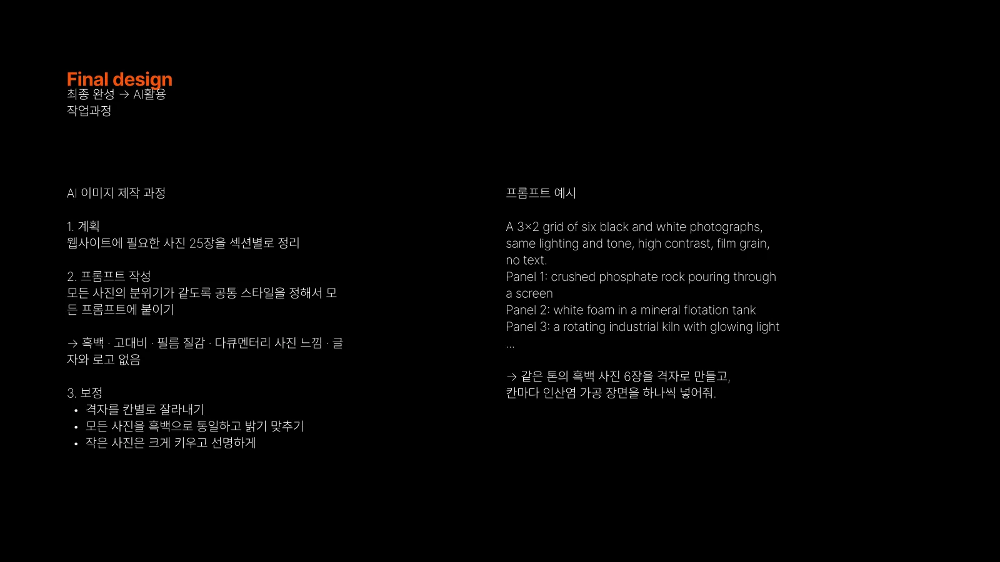
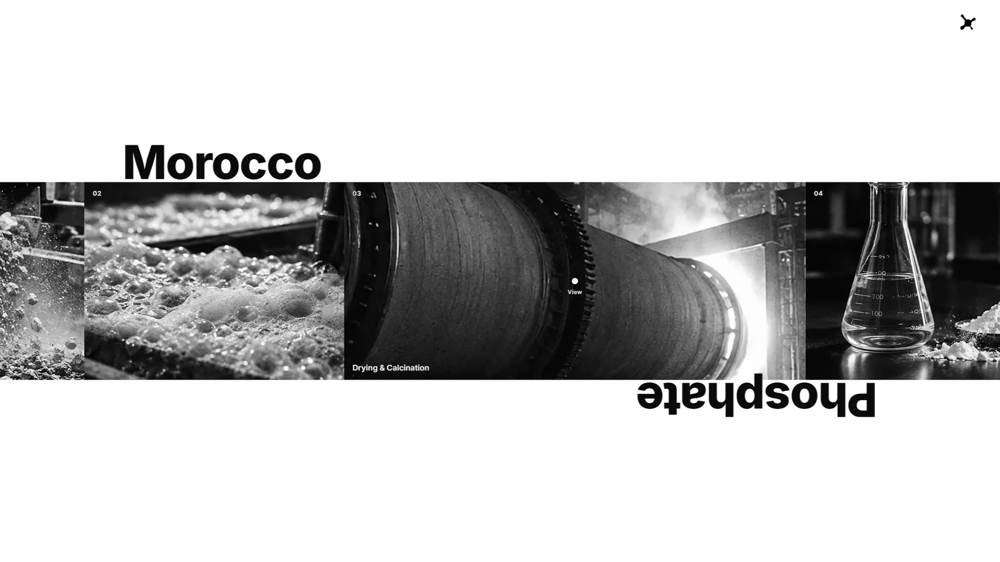
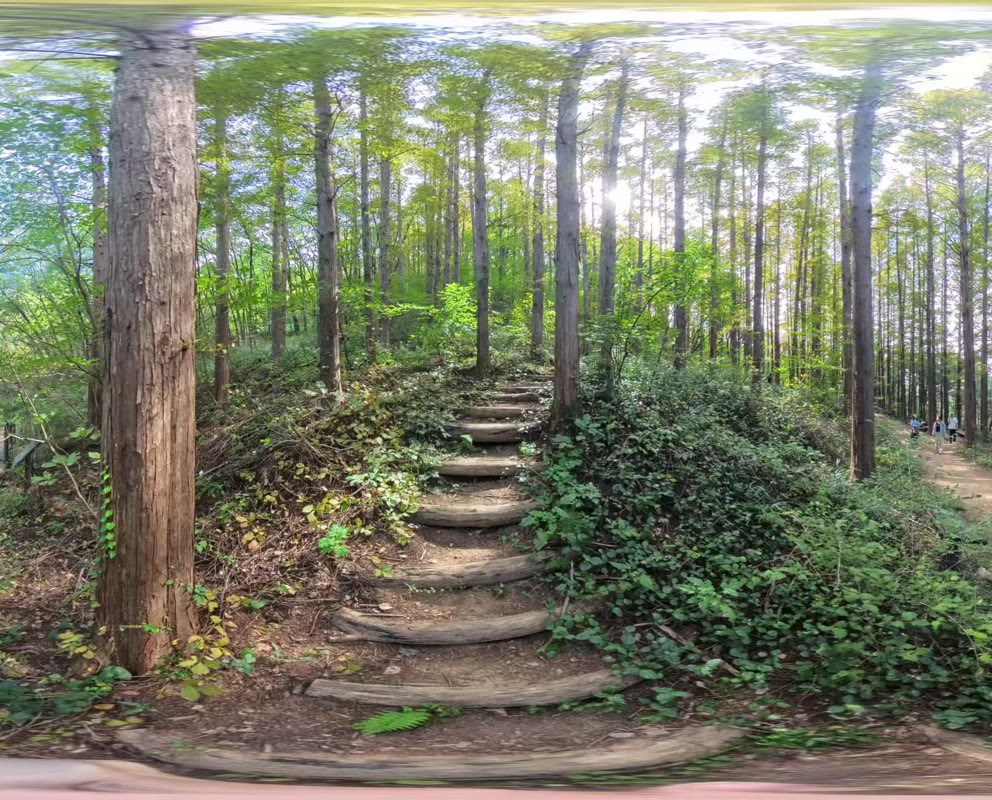
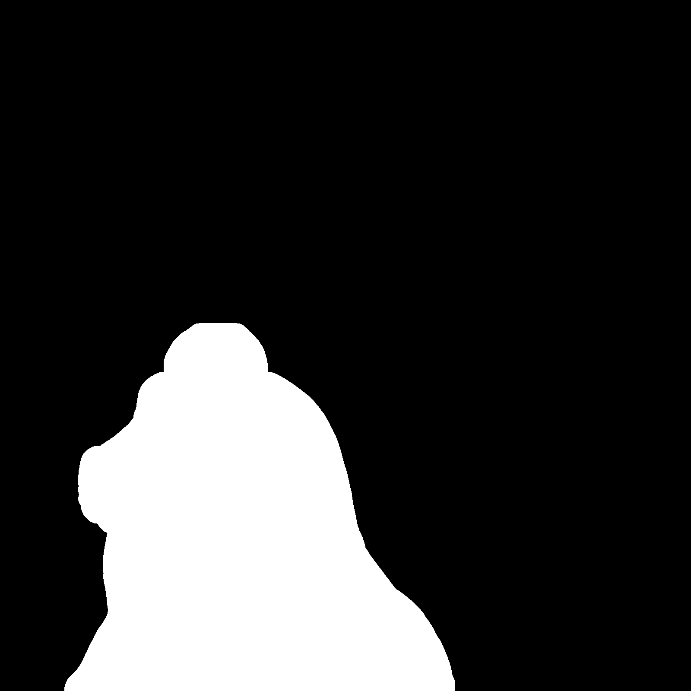
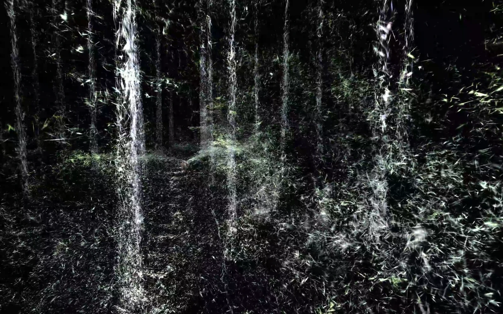
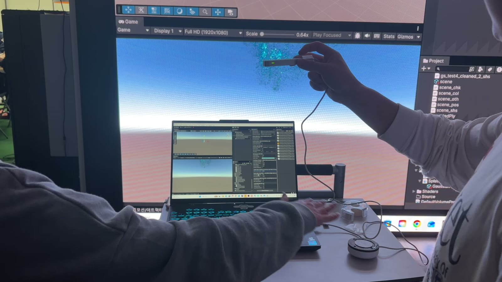
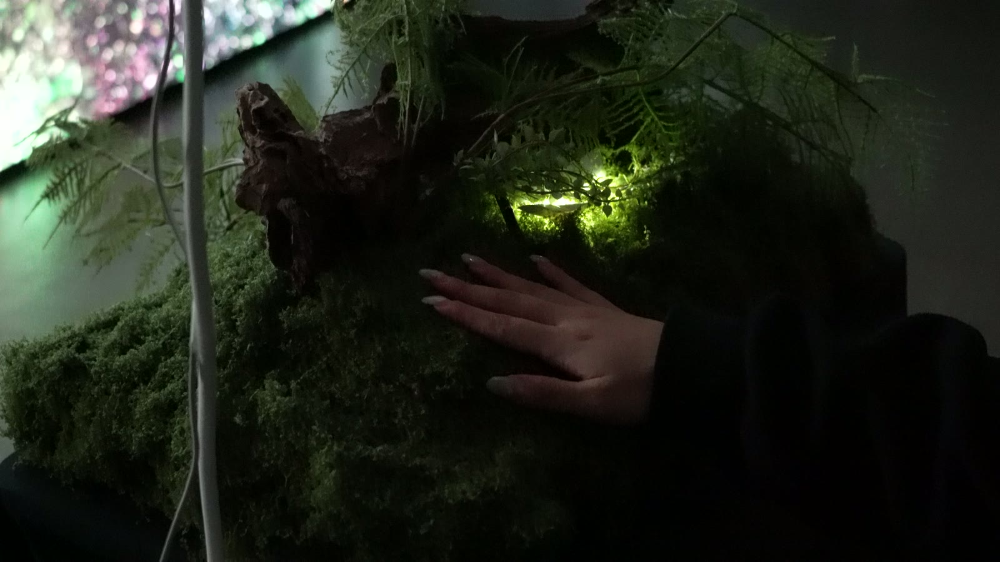
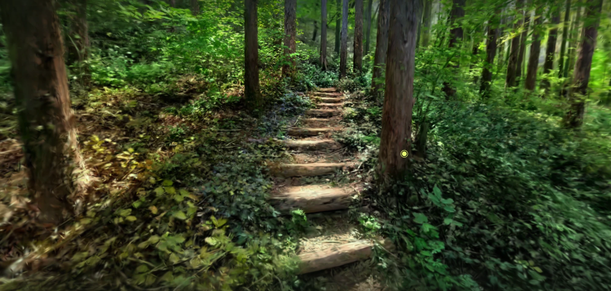
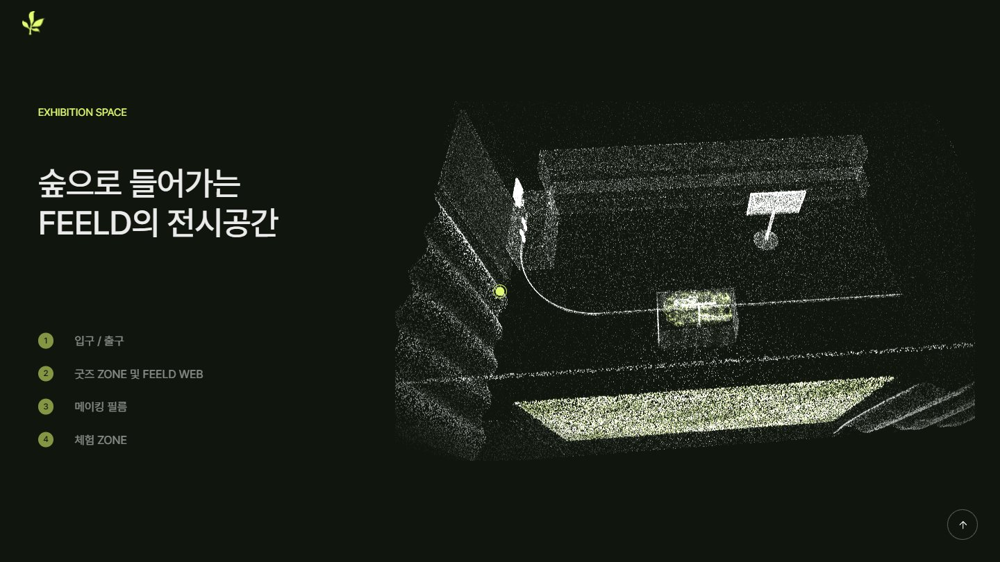

01
Knowledge지식 역량
슬로건의 "엮다"처럼, 서로 다른 네 가지 역량을 하나의 경험으로 엮습니다.
기획
누가, 어떤 상황에서 체험하는지에서 출발해 시나리오와 상호작용을 설계합니다. → FEELD, 잘타요VR
디자인
Illustrator와 Figma로 UI, 그래픽, 페이지 시안을 직접 만들고, 그 시안을 구현의 기준으로 삼습니다. → Phosphate, 냥냥 항구마을
구현
Unity · C#, HTML · CSS · JavaScript로 설계한 경험이 실제로 작동하게 만들고, 센서와 기기에서 직접 확인합니다. → FEELD, ROCKROCKROCK
영상
촬영과 편집으로 작업의 의도와 과정을 전달합니다. 360 촬영, 메이킹필름, 소개 영상을 만들었습니다. → FEELD, 쉼
02
Process나의 제작 방식
AI는 초안과 반복 작업을 빠르게 만드는 도구로 쓰고, 방향을 정하고 결과를 다듬는 일은 직접 합니다.
기획 · 시안
목표와 사용자를 정하고, 화면과 인터랙션 시안을 직접 디자인합니다.
AI로 초안
이미지 생성, 코드 작성, 사람 인식 같은 반복 작업을 AI로 빠르게 만듭니다.
직접 보정 · 개선
결과를 그대로 쓰지 않고, 시안과 의도에 맞게 값과 느낌을 하나씩 조정합니다.
실제 환경에서 검증
센서, 다른 기기, 전시장처럼 실제로 쓰일 환경에서 확인하고 다시 고칩니다.
03
AI × HandAI 활용과 직접 보정
AI가 만든 결과물을 직접 보정하고 개선한 실제 사례입니다.
Phosphate · 웹사이트 사진 25장
AI가 한 일섹션별로 필요한 사진 25장을 AI로 생성했습니다. 비슷한 장면 6장을 한 번에 격자로 만들었습니다.
직접 보정 · 개선모든 사진이 한 사이트처럼 보이도록 흑백 · 고대비 · 필름 질감 · 다큐멘터리 느낌 · 글자 없음이라는 공통 스타일을 정해 모든 프롬프트에 붙였습니다. 격자를 칸별로 잘라 흑백과 밝기를 통일하고, 작은 사진은 크게 키워 선명하게 다듬었습니다.

작업 과정 계획 → 공통 스타일 프롬프트 → 자르기 · 흑백 · 밝기 보정

결과 같은 톤으로 맞춘 사진으로 완성한 가공 과정 갤러리
FEELD · 360 촬영본을 3D 숲으로
AI가 한 일360 영상을 나눈 사진마다, 사람 인식 모델(YOLO)이 사람을 자동으로 찾아 지울 영역(마스크)을 만들었습니다.
직접 보정 · 개선자동 인식이 촬영자를 놓치는 장면이 있어, 촬영자가 늘 있는 카메라 아래 방향은 항상 지우는 고정 마스크를 더했습니다. 인식 기준값을 낮추고 지우는 여백을 넓혔으며, 하늘 방향은 빼고 0.33초 간격으로 촘촘하게 뽑도록 고쳐 3D 재구성이 잘 되게 했습니다.

360 원본 사람이 찍힌 양 끝은 잘라 내고 보여 드립니다

마스크 흰 부분은 3D 재구성에서 제외됩니다

결과 사람 없이 재구성한 숲
FEELD · Unity 손 인터랙션
AI가 한 일립모션 손 입력을 받아 숲 입자를 움직이는 스크립트와 셰이더의 초안을 AI로 작성했습니다.
직접 보정 · 개선입자가 덩어리로 움직이거나 먼지처럼 보일 때마다 레퍼런스 영상을 기준으로 방향을 다시 잡았고, VFX Graph와 인스펙터 값을 직접 보며 조절했습니다. 손을 실제로 센서에 올려 반응을 확인하고, 값마다 떨림을 측정해 쓸 값을 골랐습니다.

실물 테스트 센서에 손을 올리고 화면의 반응을 확인

체험대 테스트 이끼 체험대에 손을 얹어 확인
FEELD 웹 · 포트폴리오 사이트
AI가 한 일직접 만든 디자인 시안(Figma · SVG)을 AI 코딩 도구로 웹에 구현했습니다.
직접 보정 · 개선시안을 기준으로 구도와 색, 속도를 고쳤고, AI가 만든 인터랙션을 그대로 쓰지 않고 하나씩 원하는 느낌으로 조정했습니다. 맥 · 사파리처럼 실제 기기에서 생긴 문제도 직접 확인했습니다.
| 처음 만들어진 인터랙션 | 직접 조정한 방향 |
|---|
| 마우스 커서 잔상 | 너무 길어서, 짧게 줄이고 아주 살짝 늦게 따라오도록 |
| 숲 스플랫의 파동 | 너무 크고 세서 약하게, 색이 돌아올 때 숲 안으로 걸어 들어가듯 |
| 전시공간 카메라 | 휙휙 돌아 어지러워서, 사람이 둘러보듯 천천히 작은 범위로 |
| 제작 과정의 선 | 손 떨린 느낌이라, 곡률은 그대로 두고 매끄럽게만 |
| 텍스트 등장 | 아래에서 위가 아니라, 왼쪽에서 오른쪽으로 서서히 |
| 엽서 | 제자리에서 떠다니지 않고, 오른쪽에서 왼쪽으로 흐르며 떠다니게 |
| 팀 소개 사진 | 한 번에 나오지 않고, 카드처럼 한 장씩 뒤집히며 등장 |
| 전시공간 동선 | 실제 동선처럼 커튼을 열고 입장 → 굿즈 → 계단 → 체험 순서로 |

숲 스플랫 약하게 조정한 파동과 숲 안으로 들어가는 움직임

전시공간 천천히 둘러보도록 조정한 카메라
04
PrincipleAI 활용 원칙
- AI는 초안과 반복 작업, 방향과 마무리는 직접 정합니다.
- 기준은 내 시안과 의도입니다. AI 결과가 그럴듯해도 시안과 다르면 다시 고칩니다.
- 실제 환경에서 확인합니다. 센서, 다른 기기, 전시장에서 직접 보고 판단합니다.
- 쓴 만큼 밝힙니다. 어디에 AI를 썼고 무엇을 직접 했는지 구분해 기록합니다.